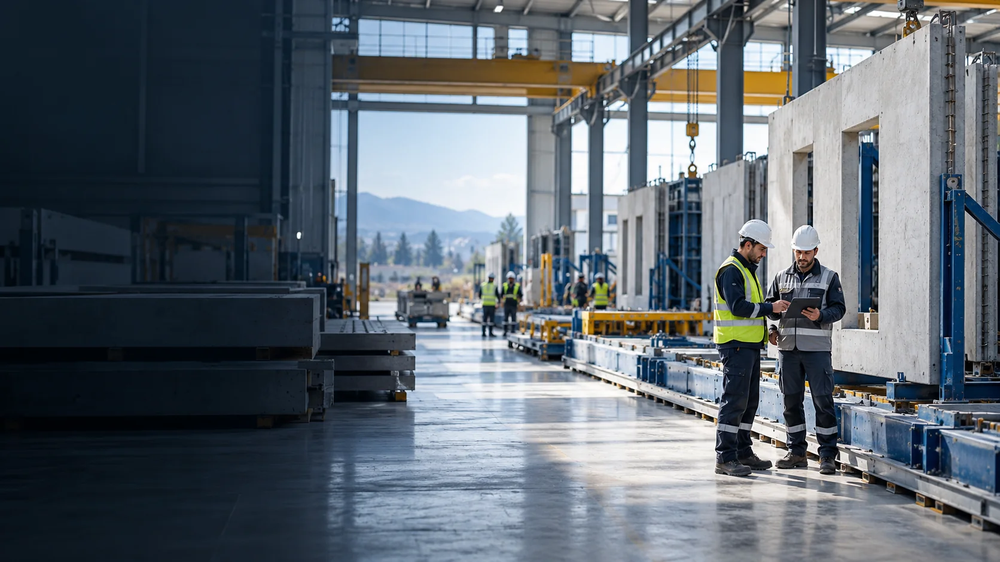
KURUMSAL SÜREÇ YÖNETİM PLATFORMU
VolkaPortal
Sahadan yönetime,
aynı akışta.
Kalite, operasyon ve iş güvenliği süreçleri aynı yerde başlar, doğru kişiye ulaşır ve sonuçlanana kadar izlenir.
Sunumu keşfetPLATFORM / 01
Kayıttan sonuca tek akış
Sahadan gelen bir konu kayda alınır, sorumlusuna atanır ve termin boyunca izlenir. Son işlem ve eklenen kanıtlar aynı kayıtta kalır.
- 01KaydetSahadan veya masadan
- 02AtaSorumlu ve terminle
- 03İzleDurum ve kanıtlarla
- 04SonuçlandırOnay ve raporla
Bu düzen, farklı ekiplerin aynı işin güncel durumunu görmesini sağlar.
PLATFORM / 02 · GİRİŞ
Her şirketin kendi alanı
Kullanıcı şirket kodunu seçip kendi hesabıyla giriş yapar. Yetkileri, göreceği sayfaları ve yapabileceği işlemleri belirler.
Böylece aynı platformu kullanan ekipler, kendi şirketlerinin verileriyle çalışır.
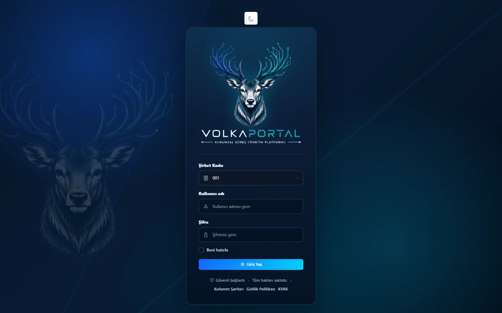
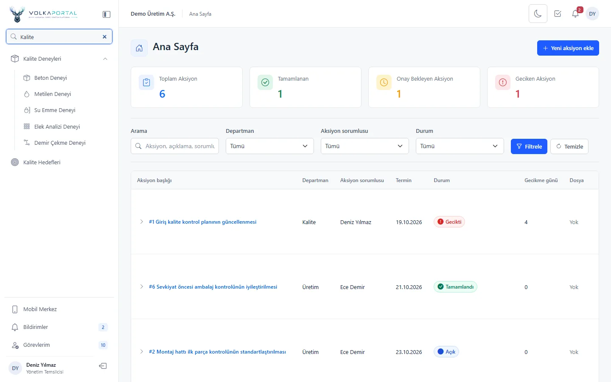
PLATFORM / 03 · ARAYÜZ
İşinize hızlı ulaşın
Sol menü modülleri düzenli biçimde toplar. Liste ekranlarında arama ve filtrelerle ilgili kayda ulaşabilir, açık işleri ve güncel durumları aynı sayfada görebilirsiniz.
Aynı yapı masaüstü, tablet ve telefonda kullanıma uyarlanır.
PLATFORM / 04 · MOBİL KULLANIM
İşin olduğu yerde kayıt
Mobil Merkez, sahada bilgisayar açmadan kayıt oluşturmak için kısa yollar sunar. Aksiyon, bakım arızası, uygunsuzluk, İSG notu ve müşteri geri bildirimi telefondan başlatılabilir.
Kaydı olayın gerçekleştiği yerde açın; takip webde de sürsün.
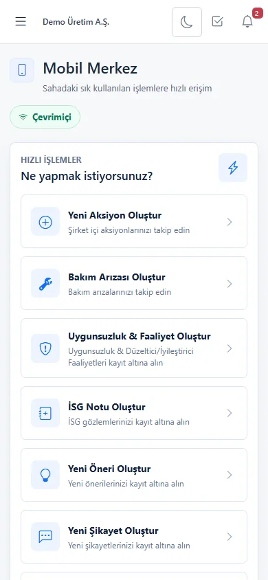
PLATFORM / 05 · BİLGİLENDİRME
Güncel durum doğru kişiye ulaşır
Site içi bildirimler, kullanıcıya kendisini ilgilendiren gelişmeleri gösterir. Planlı e-posta hatırlatmaları yaklaşan veya geçen terminleri gündeme getirir.
Dönemsel raporlar, kayıtları Excel veya PDF olarak paylaşmayı ve toplantılarda değerlendirmeyi kolaylaştırır.
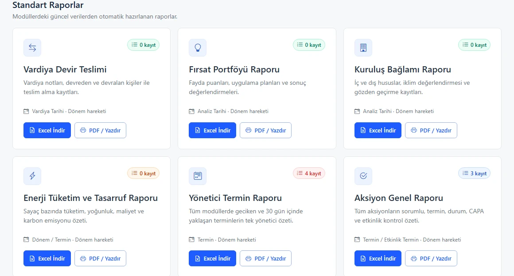
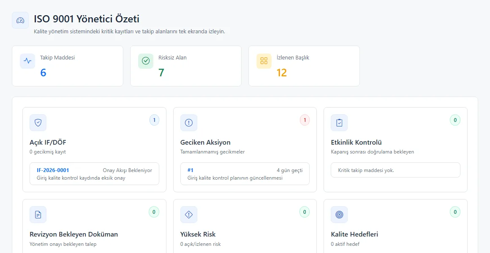
PLATFORM / 06 · YÖNETİM
Öncelikler tek bakışta
ISO 9001 Yönetici Özeti, açık DÖF ve aksiyonları; bekleyen doküman, denetim ve kalibrasyon konularıyla birlikte gösterir.
Yönetici Termin Paneli geciken işleri ayrıca sıralar. Üst yönetim, hangi konunun müdahale beklediğini listeler arasında kaybolmadan görür.
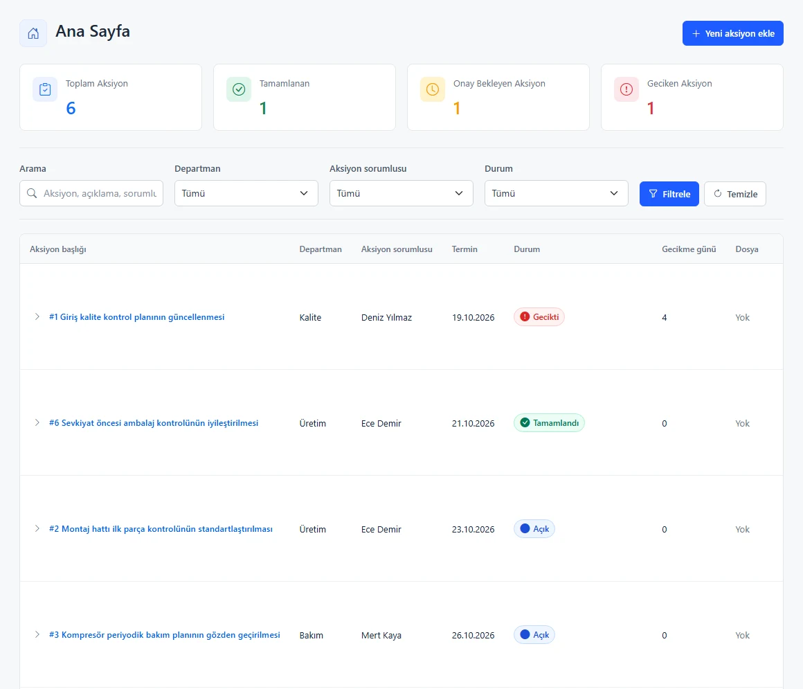
MODÜLLER / 01 · AKSİYONLAR
Her işin bir sorumlusu var
Aksiyon açarken işin konusu, sorumlusu ve bitiş tarihi belirlenir. Sorumlu kişi ilerlemeyi kaydeder; yönetici geciken veya onay bekleyen işleri izler.
Görevlerim, kişinin kendisine atanmış işleri farklı modüllerden tek yerde toplar.
MODÜLLER / 02 · KALİTE
Uygunsuzluğu kapatırken nedenini de izleyin
İF Yönetimi, uygunsuzluk ve düzeltici faaliyet kaydını sorumlu, termin, onay ve etkinlik kontrolüyle takip eder.
İç Denetim Yönetimi plan, soru listesi, bulgu ve takip adımlarını kayda alır. Açık denetimler ve tamamlanan kayıtlar ayrı ayrı izlenir.
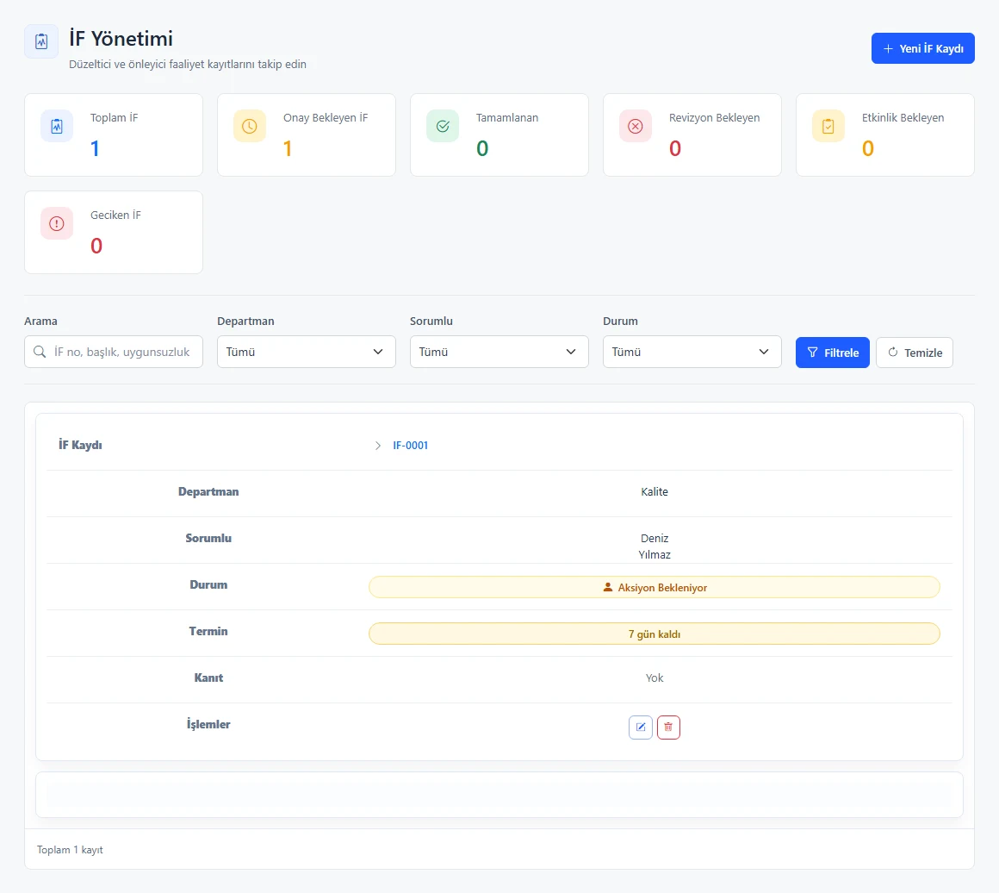
MODÜLLER / 03 · KALİTE
Güncel doküman, izlenebilir deney
Doküman Yönetimi; yayın, revizyon talebi ve eski sürümlerin arşivini birlikte tutar. Kullanıcılar geçerli dokümana ulaşırken önceki sürümler kaybolmaz.
Kalite Deneyleri, beton ve diğer deney kayıtlarının ölçüm sonuçlarını ve terminlerini takip eder.
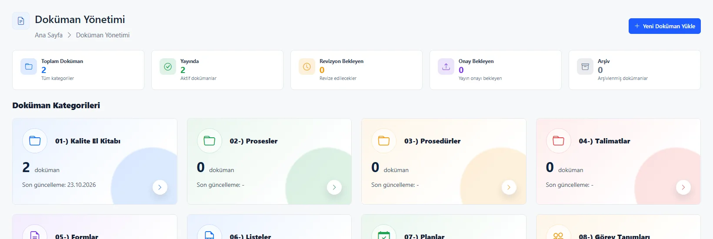
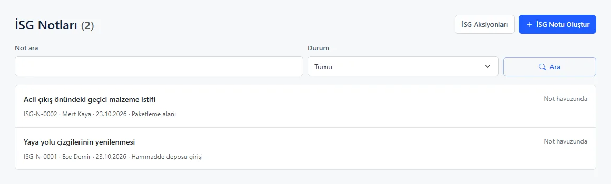
MODÜLLER / 04 · İŞ SAĞLIĞI
Saha gözlemi aksiyona dönüşür
Her personel bir İSG notu açabilir. Not havuzundaki gözlem değerlendirilir; çalışma gerektiriyorsa sorumlu ve termin verilerek İSG aksiyonuna dönüştürülür.
Not ile aksiyon arasındaki bağ, konunun nasıl ele alındığını sonradan görmeyi sağlar.
MODÜLLER / 05 · BAKIM
Arıza sahada açılır, takip merkezde sürer
Personel arızayı Mobil Merkez’den kaydeder ve gerekirse fotoğraf ekler. Bakım ekibi işi üstlenir; makine, sorumlu, durum ve yapılan işlem aynı kayıtta izlenir.
Web görünümü, açık arızaları ve tamamlanan işleri toplu olarak gösterir.
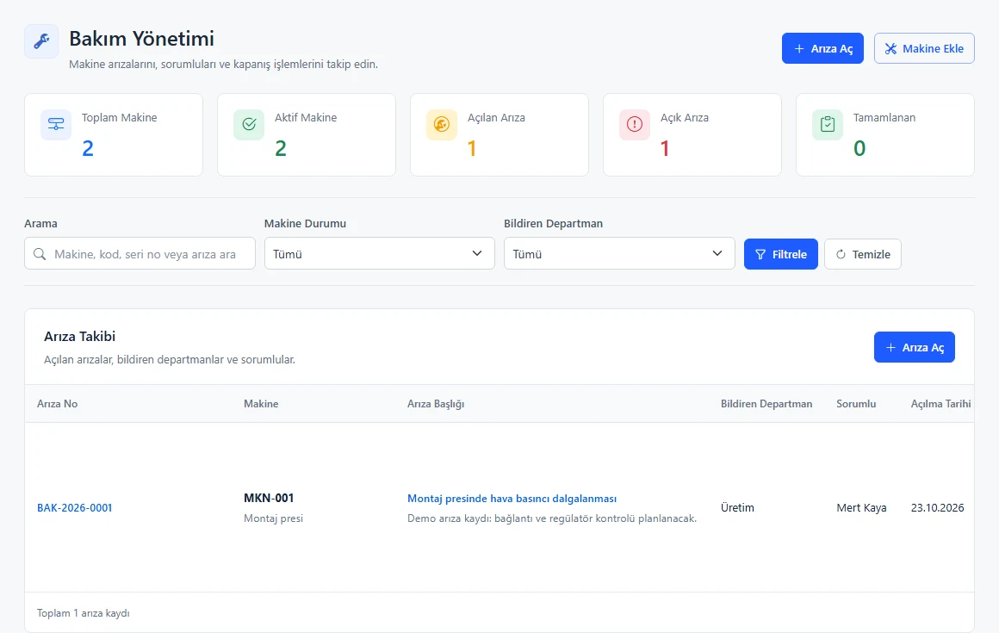
MODÜLLER / 06 · EKİPMAN
Cihaz ve ekipman takvimi görünür
Kalibrasyon Planı yaklaşan ve süresi geçen cihazları ayrı gösterir. Araç Yönetimi, araç kayıtları ve takip tarihlerini düzenli tutar.
Zimmet Yönetimi, ekipmanın kimden kime teslim edildiğini ve iade durumunu kaydeder.
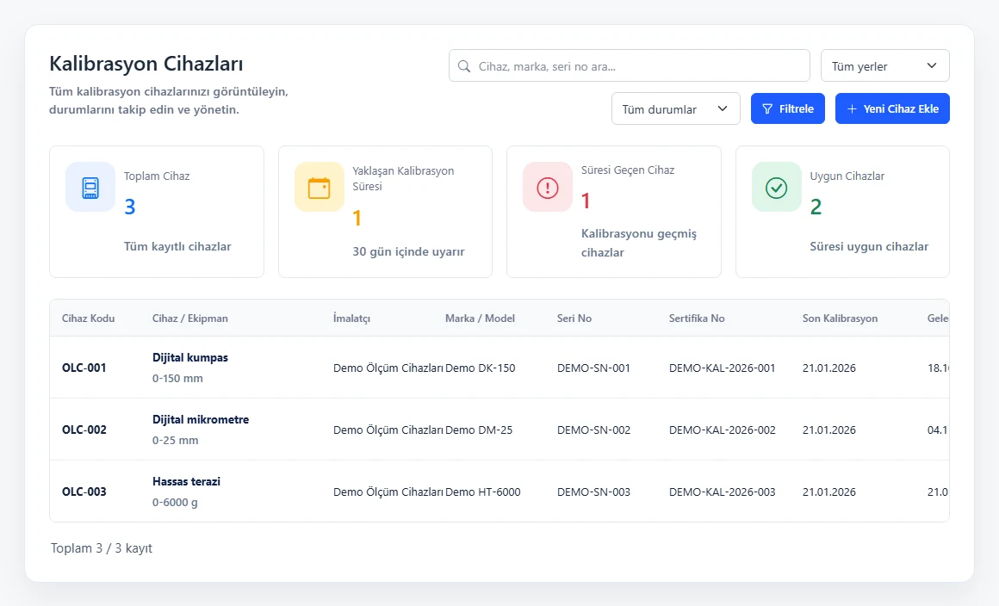
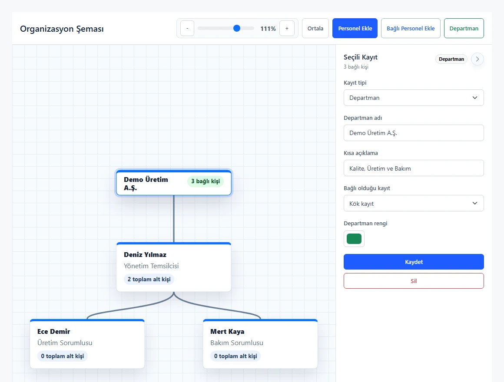
MODÜLLER / 07 · EKİP
Yetki ve sorumluluk netleşir
Kullanıcı Yönetimi, hesapları ve rol bazlı erişimi düzenler. Organizasyon Şeması ise personeli, görevini ve bağlı olduğu yöneticiyi görünür kılar.
İş atamalarında doğru kişiyi seçmek, güncel personel yapısıyla daha kolaydır.
MODÜLLER / 08 · GERİ BİLDİRİM
Fikirler ve şikayetler kayıtsız kalmaz
Personel önerisini kaydeder; yetkili kişiler değerlendirir. Şikayetler ve müşteri geri bildirimleri de sorumlu, işlem özeti ve sonuç bilgisiyle takip edilir.
Müşteri geri bildirimine önce-sonra görselleri eklenebilir. Böylece yapılan iyileştirme somut biçimde gösterilir.
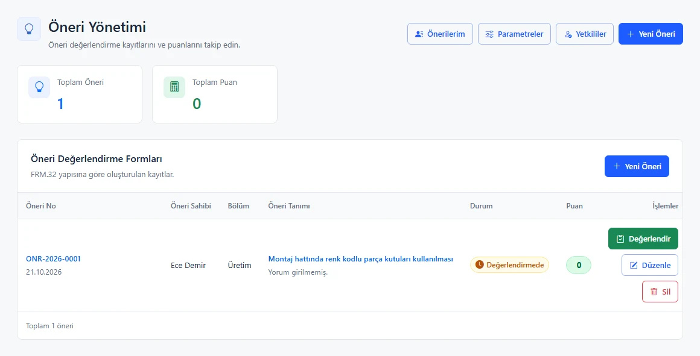
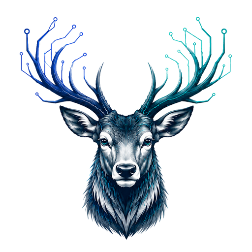
VOLKAPORTAL
İşleri kaydetmek değil,
ilerletmek için.
Tek çalışma alanı. Net sorumluluklar. Görünür süreçler.
volkaportal.com